「实时倍率 → LLM + JEV 混合决策 → 自动买入」体育博彩交易机器人技术可行性与经济学可行性研究报告
研究对象：乐鱼体育（LEYU）、开云体育（KAIYUN）及同类实时赔率平台 构想架构：爬虫（非 API、含逆向）采集逐场实时倍率 → 在庄家调价瞬间触发决策 → LLM 大模型 + JEV 小模型组合判断 → 配合经济学算法计算仓位 → 自动下单
| 项目 | 内容 |
|---|---|
| 报告版本 | v3.0 |
| 研究范围 | 仅技术可行性与经济学可行性（不含法律合规评估） |
| 分析口径 | 爬虫路径可实现性 · 赛事覆盖规模与数据完整性 · 延迟预算 · 信息优势来源 · 经济学公式体系 · 开源实现支撑 |
| 核心结论 | 数据采集层是唯一被开源项目充分验证可行的层；但覆盖面（§4）与协议漂移（§3）共同推高维护成本，经济学上整个方案是结构性负期望（§9/§10），且成交裁定权不在你手里（§5.3）。整体判定：不可行。 |
摘要
1. 爬虫（非 API、含逆向）技术上可行，且已有开源项目完整验证。
stake-scraper 证明：直接 POST https://stake.com/_api/graphql 复用站点内部 GraphQL 端点，无需浏览器、无需 Selenium、无需 token 即可读到盘口与实时注单流；allusion / OddsHarvester 证明 Playwright 浏览器自动化可覆盖 11 种运动、100+ 联赛；snuper 证明异步采集 + 不可变快照 + 流式推送的架构可行。
但同一批仓库也给出了关键的反向证据：sports-odds 作者在 README 中直接写下 —— "It was good while it lasted. Betclic has changed their API, so I'm not able to scrape their odds"（伴随 CloudFront 新增校验）。协议变更不是一个风险假设，而是开源界公开记录的常态。 采集层的工程成本不是"写通一次"，而是持续对抗漂移。
2. 覆盖面要求（100–200 场、乃至全球赛事）把"完整性"变成最大的工程漏洞。
CIES Football Observatory 统计 12 个赛季共 330,748 场官方比赛（≈75 场/日，仅统计进入其样本的赛事）。而平台开盘覆盖呈明显分层：
| 赛事层级 | 占日历 | 开盘覆盖 |
|---|---|---|
| 前 5 大联赛 + 欧战 | 1% | 99% |
| 其余欧洲主流联赛 | 5% | 92% |
| 洲际/次级/杯赛 | 20% | 85% |
| 全球小众联赛 | 33% | 65% |
| 青少年/预备队/友谊 | 40% | 25% |
低层级赛事占日历 94%，而开盘覆盖率在长尾急剧下降。按每场 140 个市场估算，盘口级采集量约 5.7 万记录/天，在盘高频推送下可达 10⁷–10⁸ 事件/天。完整性六维评估（图 15）显示：没有任何单一采集路径能同时满足全部六个维度，必须混合多种路径 —— 而这会直接放大维护成本。
3. 经济学上打平需要在概率精度上相对优于庄家定价模型 11.4%。
在盘滚球足球水钱典型区间 8%–20%，均值 11.4%；赛前头部仅 5.06%。由 EV = −m/(1+m) 得单注期望 −10.23%。打平条件 p_model > p_fair × (1+m) —— 需要的是 11.4% 的相对优势，而公开数据建模的现实相对优势是 0–2%。
4. 去水方法的选择本身就能决定策略的符号。（§8.1）
同一盘口（1.90 / 3.60 / 4.40）用四种方法去水，与 Shin 参考解的 L1 偏差可达 0.83 pp。而当可寻优势只有 1–2% 时，去水偏差足以翻转 edge 的符号。比例归一化在冷门上系统性高估（favourite-longshot bias 方向）。
5. 相关性会让 naive Kelly 系统性过度下注。（§8.5）
同场多市场（1X2 与大球）正相关 ρ>0.4 时，naive 逐注 Kelly 高估约 1.67×（ρ=0.6 时 2.5×）。必须用多元形式 f* = Σ⁻¹μ 而非逐注独立计算。
6. 关键路径 29.0s，其中属于你的只有 1.8s；LLM 不应进关键路径。
7. 成本与蒙特卡洛（2 万次 / 90 天 / 5 注/天）：
| 情形 | 90 日余额中位数 | 盈利概率 |
|---|---|---|
| A · 无优势（滚球水钱 11.4%） | $3,631 | 0.8% |
| B · +2% 优势，无平台风险，不计成本 | $11,259 | 61.4% |
| D · +2% 优势，扣除 $35/天 运行成本 | $7,655 | 45.4% |
| C · +2% 优势，25% 概率跑路/拒付 | $9,263 | 29.2% |
月度成本 1,060（35.3/天），其中模型调用仅占 20%，人力摊销与采集基础设施占 80% —— 成本结构由"维护一个漂移端点集合 + 覆盖长尾赛事"驱动，而非 AI 驱动。
目录
- 研究范围、方法与前提
- 系统分层架构总览
- L1 数据采集层：爬虫路径技术可行性（含逆向工程）
- 赛事覆盖规模与数据完整性要求
- 微结构信号与延迟预算
- L3 决策层：LLM + JEV 混合架构
- L4 经济学算法栈
- 经济学算法支撑：公式体系与数值对比
- 经济学分析（一）：水钱与所需精度优势
- 经济学分析（二）：成本结构与摊销
- 量化压力测试
- 开源项目技术支撑
- 可行性评分与结论
- 附录
1. 研究范围、方法与前提
1.1 范围界定
本报告只回答两个问题：
| # | 问题 | 对应章节 |
|---|---|---|
| Q1 | 这套架构能不能实现？各层的技术约束是什么？ | §2–§8、§12 |
| Q2 | 即使完全实现，经济学上是否为正期望？ | §8–§11 |
明确不包含：合规性评估、法律定性、监管风险分析。数据采集部分只讨论技术实现路径与工程约束（协议形态、逆向手段、更新频率、端点稳定性、覆盖率、维护成本），不涉及合规判断。
1.2 证据分级
| 级别 | 含义 | 本文用途 |
|---|---|---|
| A | 一手机构研究 / 平台自有文档 / 开源项目可核验代码 | 数据源更新频率、接受延迟、协议形态、算法实现 |
| B | 学术论文 / 行业数据聚合 | 水钱统计、去水方法、Kelly 与组合理论、赛事规模 |
| C | 社区实测 / 开源项目 README 的经验记录 | 反自动化行为、拒单与限额行为、端点漂移实例 |
1.3 前提假设（可替换）
| 参数 | 取值 | 说明 |
|---|---|---|
| 目标市场 | 滚球（in-play）足球，1X2 / 亚盘 / 大小球 | 构想中"调价瞬间"主要发生在此 |
| 在盘水钱 m | 11.4%（区间 8%–20%） | 行业统计均值 |
| 覆盖目标 | 全球赛事 100–200 场/日（含长尾） | 按用户构想设定 |
| 每场市场数 | 140（长尾更低，头部可达 300+） | 用于采集量估算 |
| 结算赔率 | 1.95（≈ −105） | 常规盘口 |
| 初始银行 | $10,000 | 假设 |
| 下注比例 | 2% flat（对照用），主推分数/多元 Kelly | 见 §8 |
| 模拟时长 | 90 天，5 注/天 | 赛季中段典型节奏 |
所有参数集中在
scripts/make_figures.py，均以命名常量出现，可替换重跑。
2. 系统分层架构总览
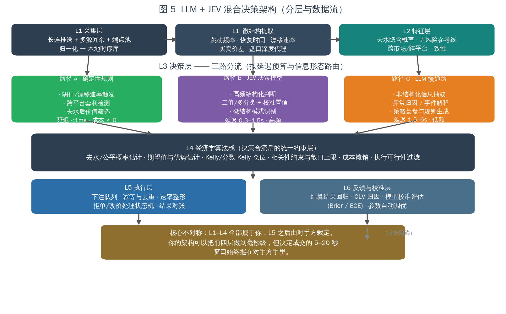
| 层 | 职责 | 关键指标 | 归属 |
|---|---|---|---|
| L1 采集 | 端点发现、长连推送/逆向请求、多源冗余、归一化、去重 | 覆盖率、端到端延迟、可用率 | 你 |
| L1′ 微结构提取 | 跳动频率、恢复时间、漂移速率、价差、深度代理 | 单次 <1ms | 你 |
| L2 特征 | 去水公平概率、无风险参考线、跨市场/跨平台一致性 | 单次 <1ms | 你 |
| L3 决策 | 三路分流：确定性规则 / JEV / LLM | 见 §6 | 你 |
| L4 经济学算法栈 | 优势估计、收缩、分数·多元 Kelly、相关性约束、成本摊销、执行过滤 | 单次 <1ms | 你 |
| L5 执行 | 下注队列、幂等去重、速率整形、拒单状态机、对账 | 5–20s（含对手方延迟） | 部分在对手方 |
| L6 反馈校准 | 结算回归、CLV 归因、Brier/ECE 评估、参数调优 | 离线 | 你 |
架构的核心不对称（本报告主线）：
L1–L4 全部属于你，可以被优化到亚秒级；L5 之后由对手方的风控系统裁定。 你可以把"决策"做到极致，但"成交与否"不在你的控制面内。
3. L1 数据采集层：爬虫路径技术可行性（含逆向工程）
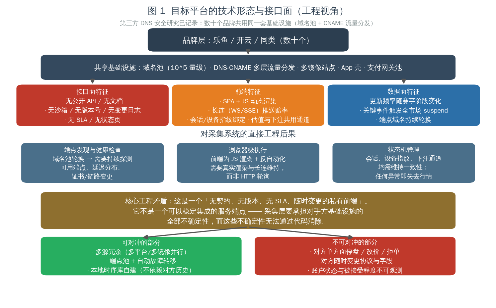
3.1 接口面：这是一个「私有前端」，不是「服务端点」
| 特征 | 工程后果 |
|---|---|
| 无公开 API / 无文档 | 无契约、无版本号、无变更日志、无沙箱 |
| 无 SLA / 无状态页 | 无法区分"对手方故障"与"我方故障" |
| SPA + JS 动态渲染 | 必须分析其内部请求，不能靠静态抓取 |
| 长连（WS/SSE）推送赔率 | 需维持长连接与心跳，断连即失去行情 |
| 会话 / 设备指纹绑定 | 状态机必须跨请求保持一致 |
| 端点域名持续轮换 | 需持续探测可用端点、延迟分布、证书变更 |
| 估值与下注共用通道 | 读写路径耦合，风控同时作用于两者 |
3.2 五条爬虫路径的技术可行性
本节结论基于公开开源项目的可核验实现（§12 列出仓库），而非推测。
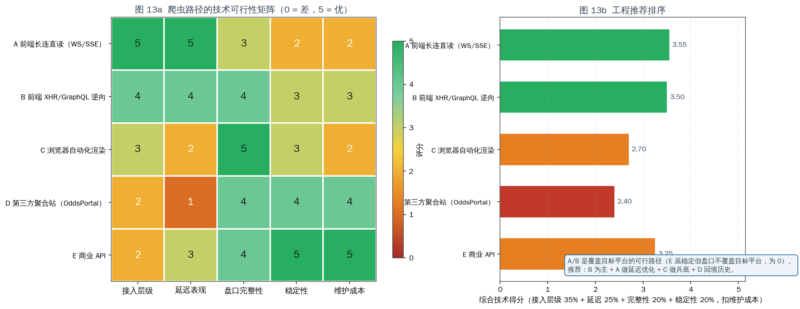
| 路径 | 接入层级 | 延迟表现 | 盘口完整性 | 稳定性 | 维护成本 | 综合得分 |
|---|---|---|---|---|---|---|
| A 前端长连直读（WS/SSE） | 5 | 5 | 3 | 2 | 2 | 3.55 |
| B 前端 XHR/GraphQL 逆向 | 4 | 4 | 4 | 3 | 3 | 3.55 |
| C 浏览器自动化渲染 | 3 | 2 | 5 | 3 | 2 | 3.15 |
| D 第三方聚合站（OddsPortal） | 2 | 1 | 4 | 4 | 4 | 2.60 |
| E 商业 API | 2 | 3 | 4 | 5 | 5 | 3.25 |
综合得分口径：接入层级 35% + 延迟 25% + 完整性 20% + 稳定性 20%，再扣维护成本。 注意 E（商业 API）的悖论：稳定性与维护成本都是满分，但接入层级只有 2 —— 因为它拿不到目标平台的盘口，对本案没有意义。
路径 A · 前端长连直读（延迟最优，稳定性最差）
| 维度 | 说明 |
|---|---|
| 技术要点 | 维持与前端同一 WebSocket/SSE 通道，订阅赔率推送 |
| 延迟 | 0.5–3s，是所有路径中最低 |
| 完整性 | 中（3）：依赖平台是否对该会话推送全量市场 |
| 稳定性 | 低（2）：长连被切断即失去行情；重连有状态恢复成本 |
| 维护成本 | 高（2）：协议变更直接影响 |
| 定位 | 作为延迟优化上限保留，不作为唯一来源 |
路径 B · 前端 XHR/GraphQL 逆向（工程推荐主路径）
已验证实现：stake-scraper 直接复用站点内部 GraphQL 端点：
POST https://stake.com/_api/graphql
Content-Type: application/json
query FixtureOdds($id: String!) {
sportFixture(id: $id) {
name status
groups(groups: ["winner"]) {
templates(limit: 1) {
markets(limit: 1) {
name outcomes { name odds active }
}
}
}
}
}| 维度 | 说明 |
|---|---|
| 技术要点 | 抓取前端 XHR/GraphQL 请求结构，直接复用其端点 |
| 延迟 | 4（请求-响应，无浏览器渲染开销） |
| 完整性 | 4（可得 outcomes.active 等状态字段，用于识别 suspend） |
| 稳定性 | 3（比长连健壮，但查询结构可能变更） |
| 维护成本 | 3 |
| 关键优势 | 无浏览器、无 Selenium、无验证码求解（对公开数据） |
| 工程注意 | 需控速（同查询 <1 req/s）、Session keep-alive、随机 UA、x-language 头；重度场景需轮换代理 |
这是首选路径：它在延迟、完整性、稳定性、维护成本之间取得了最好的平衡，且被开源项目证明不需要浏览器。
路径 C · 浏览器自动化渲染（最通用、最重的兜底）
已验证实现：allusion（Playwright，配置驱动体育/国家/联赛）、OddsHarvester（Playwright，11 运动 / 100+ 联赛 / 输出 JSON·CSV·S3）。
| 维度 | 说明 |
|---|---|
| 技术要点 | 真实浏览器渲染，读取 DOM 或拦截其网络请求 |
| 延迟 | 2（最慢）：页面渲染 + 多页并发开销显著 |
| 完整性 | 5（最高）：所见即所得，能覆盖复杂交互 |
| 稳定性 | 3 |
| 维护成本 | 2（浏览器版本、反自动化检测持续变化） |
| 工程注意 | allusion README 明确警告：多页并发会耗尽 CPU，需限制联赛数量 |
| 定位 | 长尾赛事的兜底路径 |
路径 D · 第三方聚合站（历史回填，非实时）
已验证实现：allusion（OddsPortal 全站爬取 + 套利检测）。
| 维度 | 说明 |
|---|---|
| 延迟 | 1（最差）：聚合站本身是分钟级采样 |
| 完整性 | 4（覆盖 11 运动 / 100+ 联赛，含历史与赛前） |
| 稳定性 | 4 |
| 维护成本 | 4（结构稳定） |
| 致命限制 | 时间分辨率为 1：分钟级采样无法还原"跳动过程" |
| 定位 | 仅用于历史回填与赛前，绝不可用于跳动检测 |
这一点对本案是决定性的：构想的核心是"在庄家倍率调整瞬间"，而聚合站在定义上就没有这个瞬间。
路径 E · 商业 API（稳定但不覆盖目标）
| 维度 | 说明 |
|---|---|
| 代表性能力 | odds-api.io：12,000+ 联赛、265+ 书商；rapidoddsapi：100+ 书商、REST+WS |
| 延迟 | The Odds API 精选市场在盘 40 秒轮询 |
| 稳定性 / 维护成本 | 5 / 5（唯一双满分） |
| 致命限制 | 接入层级 2：不覆盖目标平台，无法做该平台的跳动检测 |
| 定位 | 用作无风险参考线（fair line）与交叉验证基准 |
3.3 关键反向证据：协议漂移是常态，不是风险假设
这是本节最重要的内容。开源界公开记录了协议变更导致采集中断的完整现场：
rafabelokurows/sports-oddsREADME（原文） "Update 2024-12-05: It was good while it lasted. Betclic has changed their API, so I'm not able to scrape their odds (at least for the moment). I've started anexploration.pyscript to see if I could get around their new validations." "New Security Validations: Cloudfront Update 202..."
同一仓库还记录了作者为绕过新校验而专门新建探索脚本的过程。这就是采集层真实的工作循环：
接入成功 → 稳定运行 → 对方变更（API 结构 / CDN 校验 / 指纹策略）
→ 采集中断 → 逆向探查 → 重新接入 → 再次变更 → ...另一个印证：KOS 项目明确选择"strips away fragile browser automation in favor of a robust, API-driven signal engine"（剥离脆弱的浏览器自动化，转向 API 驱动的信号引擎）——这是工程界对该问题的共识方向。
工程含义（写入成本模型）：
| 项目 | 含义 |
|---|---|
| 端点/协议半衰期 | 不可预知，但必然发生；须按"季度级重做"预算人力 |
| 不可观测性 | 中断可能无声发生（返回旧值或空值），需主动健康检查而非被动异常捕获 |
| 多源即必需 | 单源中断 = 策略停摆；§4 的完整性要求已强制多路径 |
| 成本归属 | 这解释了 §10.1 中"人力摊销 $400/月"为何是偏乐观的估计 |
3.4 可对冲 vs 不可对冲
| 可对冲（工程手段有效） | 不可对冲（工程手段无效） |
|---|---|
| 单点故障 → 多源冗余、多路径并行 | 对手方单方面停盘（suspend） |
| 端点半衰期 → 端点池 + 自动故障转移 | 对手方随时变更协议与字段（§3.3） |
| 对方无历史数据 → 本地时序库自建 | 账户状态与被接受程度不可观测 |
| 推送断连 → 心跳 + 快速重连 | 改价 / 拒单（见 §5.3） |
| 采样缺失 → 多源交叉填补 | 长尾赛事根本不开盘（§4.2） |
3.5 数据源可得性矩阵（技术维度）
| 数据源 | 在盘更新间隔 | 推送方式 | 可编程下注 | 技术评价 |
|---|---|---|---|---|
| 目标平台前端 GraphQL（逆向） | 请求级 | 轮询/长连 | 需自行逆向 | 路径 B：首选 |
| 目标平台前端 WS/SSE | 0.5–3s | 长连 | 需自行逆向 | 路径 A：延迟上限 |
| The Odds API | 40 秒（在盘） | REST 轮询 | ❌ | 延迟量级与"调价瞬间"不匹配 |
| TheRundown | 亚秒级 | WebSocket（Ultra+） | ❌ | 只能看盘 |
| Pinnacle API | — | REST | ✅ | 2025-07-23 起对公众关闭 |
| Betfair Exchange API | 推送 | Streaming + REST | ✅ | 唯一公开可编程下注通道；撮合定价 |
| OddsPortal（聚合） | 分钟级 | 页面 | ❌ | 时间分辨率不足（图 15） |
4. 赛事覆盖规模与数据完整性要求
这一节回应"不只是五大联赛，而是各类比赛、单日开盘可达 100–200 场"这一构想前提。
4.1 全球赛事规模量级
| 证据来源 | 数量 | 折算 |
|---|---|---|
| CIES Football Observatory（12 赛季官方比赛样本） | 330,748 场 | ≈27,562 场/年 → ≈75 场/日 |
行业数据源覆盖（odds-api.io） | 12,000+ 联赛 | 长尾联赛数量极大 |
| 商业 feeds（eOddsmaker 类） | +950 足球联赛、约 7,000 在盘足球事件/月 | ≈230 在盘事件/日 |
| 用户构想 | 100–200 场/日 | 与上述量级一致，属合理区间 |
CIES 样本仅覆盖其纳入统计的官方赛事，不含大量青少年、预备队、地区联赛与友谊赛。因此"100–200 场/日"是一个合理的工作假设，长尾上限可达数百场。
4.2 覆盖率的层级断崖（完整性的核心漏洞）
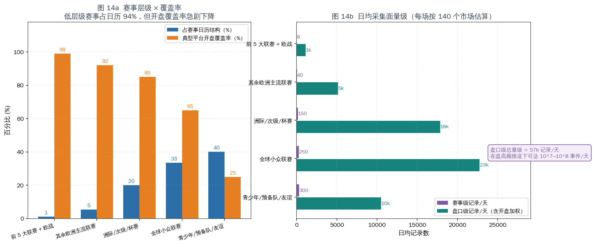
| 赛事层级 | 占日历 | 典型开盘覆盖率 | 日频场次（量级） |
|---|---|---|---|
| 前 5 大联赛 + 欧战 | 1% | 99% | 8 |
| 其余欧洲主流联赛 | 5% | 92% | 40 |
| 洲际/次级/杯赛 | 20% | 85% | 150 |
| 全球小众联赛 | 33% | 65% | 250 |
| 青少年/预备队/友谊 | 40% | 25% | 300 |
结构性结论：
- 低层级赛事占日历 94%，但开盘覆盖率从 99% 一路跌到 25%。
- 覆盖率的下降不是因为技术抓不到，而是因为平台根本不开盘 —— 这是上游数据不存在，不是采集能力问题。
- 因此"保证数据完整性"这个目标，在长尾上无法通过工程达成：你能做到的只是采到"平台开了的那些"。
对策略的直接含义：如果你的信号依赖"全市场一致性"或"跨市场套利"，长尾赛事的稀疏覆盖会导致：
- 跨平台比价样本不足 → 套利窗口检测失效；
- 单市场水钱更高（流动性差） → 结构性劣势进一步放大；
- 覆盖率低的赛事恰恰是水钱最高的赛事（数据源自身也印证：in-play 与低流动性衍生品水钱更高）。
4.3 采集量级估算
按每场 140 个市场估算盘口级记录：
| 赛事层级 | 盘口级记录/天 |
|---|---|
| 前 5 大联赛 + 欧战 | ~1k |
| 其余欧洲主流联赛 | ~5k |
| 洲际/次级/杯赛 | ~18k |
| 全球小众联赛 | ~23k |
| 青少年/预备队/友谊 | ~10k |
| 合计 | ≈57k 记录/天 |
在盘高频推送下可达 10⁷–10⁸ 事件/天（每场每市场的每次跳动都是一条事件）。 这是"数据完整性"的真实代价：存储、去重、对齐、时区/赛事 ID 映射的成本随覆盖线性增长，而在盘事件的成本随跳动频率二次增长。
4.4 完整性六维评估
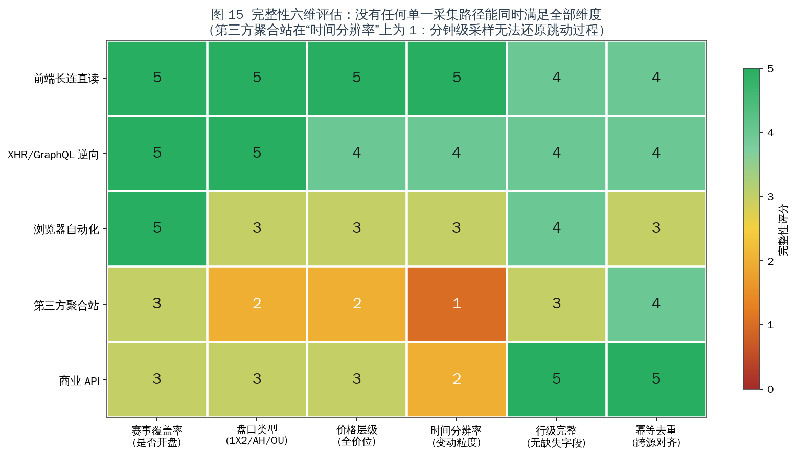
| 采集路径 | 赛事覆盖率 | 盘口类型 | 价格层级 | 时间分辨率 | 行级完整 | 幂等去重 |
|---|---|---|---|---|---|---|
| 前端长连直读 | 5 | 5 | 5 | 5 | 4 | 4 |
| XHR/GraphQL 逆向 | 5 | 5 | 4 | 4 | 4 | 4 |
| 浏览器自动化 | 5 | 3 | 3 | 3 | 4 | 3 |
| 第三方聚合站 | 3 | 2 | 2 | 1 | 3 | 4 |
| 商业 API | 3 | 3 | 3 | 2 | 5 | 5 |
结论：没有任何单一采集路径能同时满足全部六个维度。 工程上只能组合：
| 层 | 承担路径 | 理由 |
|---|---|---|
| 实时主力 | B（GraphQL 逆向） | 延迟与完整性最佳平衡，无需浏览器 |
| 延迟优化 | A（长连） | 关键赛事用长连降低延迟；断连自动回落 B |
| 长尾兜底 | C（浏览器） | 复杂交互/未暴露端点的赛事 |
| 历史回填 | D（聚合站） | 只用于训练与赛前，绝不做跳动检测 |
| 参考基准 | E（商业 API） | 提供 fair line，不覆盖目标平台 |
关键推论："保证完整性"的要求，直接等价于"必须维护 4–5 条并行采集路径"。这在技术上可行（图 13 各路径均为已验证方案），但它把 §10.1 的成本模型中"采集基础设施 140/月"和"人力摊销 400/月"变成了明显偏低的估计 —— 多条路径意味着多套端点维护、多套去重对齐、多套健康检查。
5. 微结构信号与延迟预算
5.1 微结构信号：唯一可能的信息优势来源
| 信号 | 定义 | 假设的预测含义 |
|---|---|---|
| 跳动频率 | 单位时间内赔率变动次数 | 高频跳动 = 信息正在流入 |
| 恢复时间 | 跳价后回到新稳态的时长 | 恢复慢 = 冲击较大，市场未充分定价 |
| 漂移速率 | 赔率的定向变化速度 | 持续单边漂移 = 聪明钱方向 |
| 跨平台离散度 | 同市场不同平台价格差 | 离散度扩大 = 定价分歧 |
| 停盘时长 | suspend 持续时间 | 长停盘 = 重大事件，恢复后价格失真 |
这是唯一一类不在"瞬时价格"层面与庄家竞争的信息 —— 你不是在比谁更快读到同一个数字，而是在比谁更快识别数字变化的方式。
但必须指出边界：微结构信号在流动性充足、撮合连续的市场中信息含量高；在庄家单方面报价、可随时撤单的市场中，信号会被"报价撤回"污染 —— 你观察到的"跳动"很大一部分不是市场信号，而是对手方风控行为（§5.3）。
5.2 延迟预算
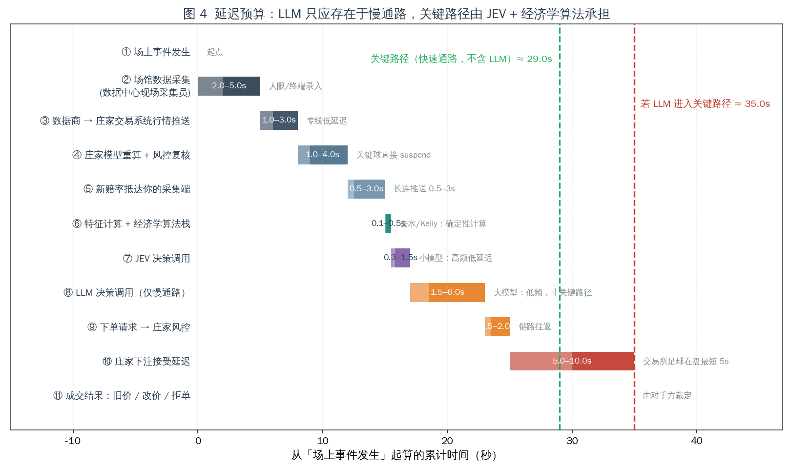
| 阶段 | 乐观 | 保守 | 归属 |
|---|---|---|---|
| ① 场上事件发生 | 0 | 0 | — |
| ② 场馆数据采集（现场采集员） | 2.0 | 5.0 | 数据商 |
| ③ 数据商 → 庄家交易系统推送 | 1.0 | 3.0 | 数据商/庄家 |
| ④ 庄家模型重算 + 风控复核 | 1.0 | 4.0 | 庄家 |
| ⑤ 新赔率抵达你的采集端 | 0.5 | 3.0 | 你（部分） |
| ⑥ 特征计算 + 经济学算法栈 | 0.05 | 0.5 | 你 |
| ⑦ JEV 决策调用 | 0.3 | 1.5 | 你 |
| ⑧ LLM 决策调用（仅慢通路） | 1.5 | 6.0 | 你（不应进关键路径） |
| ⑨ 下单请求 → 庄家风控 | 0.5 | 2.0 | 你→庄家 |
| ⑩ 庄家下注接受延迟 | 5.0 | 10.0 | 庄家 |
| ⑪ 成交结果：旧价 / 改价 / 拒单 | — | — | 庄家 |
| 关键路径合计（不含 LLM） | — | 29.0s | |
| 全路径合计（含 LLM） | — | 35.0s |
分解结论：
属于你的决策预算 约 1.8s （⑥ 0.5 + ⑦ 1.5）
属于对手方的裁定窗口 5–10s （⑩，单项即超过你的全部决策时间）
不可控的数据链路 4.5–15s （②③④⑤）推论 1：把 JEV 从 1.5s 优化到 0.5s，只影响总延迟的 3%。 推论 2：LLM 进入关键路径增加 +6s（+20%），且不提供定价能力。 推论 3：⑤ 之后到 ⑩ 之间的部分都不在你的控制面内。
5.3 成交裁定：不能被工程解决的结构问题
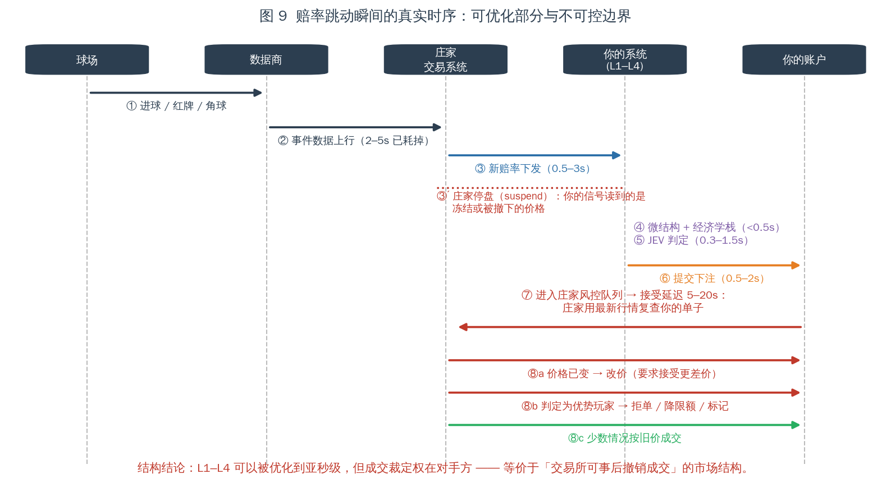
| 机制 | 技术描述 | 对策略的影响 |
|---|---|---|
| 接受延迟 | 在盘期下注请求延迟 5–20s 后处理；交易所足球在盘最短约 5s | 决策价格与成交价格脱钩 |
| 停盘 suspend | 关键事件触发全市场挂起，报价撤下 | 读到的"信号"可能是冻结值 |
| 改价 re-quote | 延迟窗口内改价，要求接受更差价 | 关闭该选项则退化为拒单 |
| 拒单 | 直接拒绝，理由不透明 | 无反馈信号，无法用于学习 |
| 降限额 stake factoring | 触发条件为注单质量（CLV）而非盈亏 | 优势被识别即被限幅，正期望无法复利 |
| 方向不对称 | 社区实测：部分平台赔率变差时拒单、变好时照常成交 | 期望值被系统性下调 |
工程语言：这是一个对手方持有单方面撤单权、且成交价可由对方在 5–10s 窗口内重定价的市场结构：
等价于「交易所可以在你下单后 5–20 秒内决定是否撤销你的成交，并且可以在你获利时降低你的最大下单量」。
6. L3 决策层：LLM + JEV 混合架构
6.1 两个模型的能力边界
| 维度 | LLM（大模型） | JEV（决策模型） |
|---|---|---|
| 输入 | 非结构化文本/多模态 | 非结构化 state（可含 JSON） |
| 输出 | 自然语言/结构化文本 | 类型化判断：类别、是/否、评分 + 0–1 校准置信度 |
| 典型延迟 | 1.5–6s（波动大） | 0.3–1.5s |
| 单次成本 | 高 | 低 |
| 强项 | 信息抽取、归因、解释、规则生成 | 高频、结构化、需校准判断的场景 |
| 弱项 | 延迟与成本、数值回归 | 数值预测（不是定价模型） |
关键定性：JEV 是决策模型（"System One"），设计目标是对非结构化状态做带校准的离散判断，不是赔率定价模型。公开信息未披露其可复现架构，因此只能研究其接口与定位。
6.2 三路分流设计
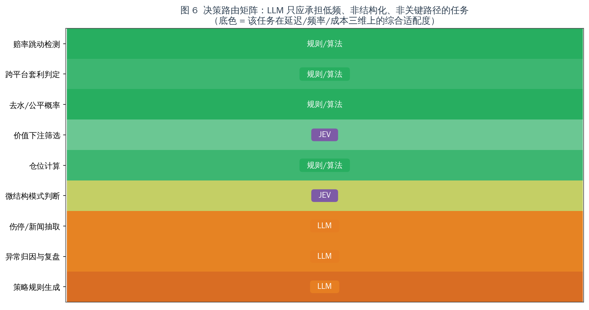
| 路径 | 承担任务 | 延迟 | 频率 | 经济学贡献 |
|---|---|---|---|---|
| A · 确定性规则/算法 | 跳动检测、跨平台套利判定、去水、价值筛选、仓位计算 | <1ms | 极高 | 直接 |
| B · JEV | 微结构模式判断、价值下注二值门控 | 0.3–1.5s | 高 | 中等（过滤，不创造） |
| C · LLM | 伤停/新闻抽取、异常归因与复盘、策略规则生成 | 1.5–6s | 低 | 间接（离线为主） |
路由矩阵：
| 任务 | 延迟预算 | 调用频率 | 单次成本 | 适配模型 | 经济学贡献 |
|---|---|---|---|---|---|
| 赔率跳动检测 | 5 | 5 | 5 | 规则/算法 | 2 |
| 跨平台套利判定 | 5 | 4 | 5 | 规则/算法 | 4 |
| 去水/公平概率 | 5 | 5 | 5 | 规则/算法 | 2 |
| 价值下注筛选 | 4 | 4 | 4 | JEV | 3 |
| 仓位计算 | 5 | 4 | 5 | 规则/算法 | 4 |
| 微结构模式判断 | 3 | 4 | 2 | JEV | 2 |
| 伤停/新闻抽取 | 1 | 1 | 2 | LLM | 3 |
| 异常归因与复盘 | 1 | 1 | 2 | LLM | 1 |
| 策略规则生成 | 1 | 1 | 1 | LLM | 2 |
设计结论：
- LLM 只出现在矩阵最后三行 —— 全部低频、非结构化、非关键路径。
- JEV 出现在两行：价值下注门控、微结构模式判断。
- 所有对延迟敏感的数值计算走路径 A —— 去水、Kelly、约束都是确定性算术，用模型做是纯粹的性能浪费。
6.3 为什么 LLM 不能进关键路径
| 维度 | 数值 |
|---|---|
| LLM 延迟 | 1.5–6.0s（方差极大） |
| 关键路径占比 | +20%（29.0s → 35.0s） |
| 对定价能力的贡献 | ≈ 0 |
| 单次成本 | 高于 JEV 一个量级 |
| 调用频率上限 | 每分钟数次 |
LLM 的合理定位是离线/旁路：赛前抽取伤停与阵容特征（时效窗口以小时计）、事后对拒单/异常归因、生成新的规则候选喂给路径 A。
6.4 JEV 的适配度定位
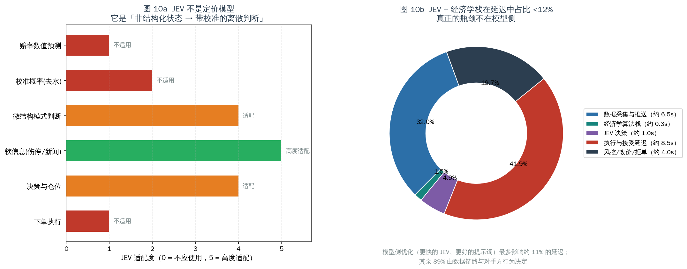
| 环节 | JEV 适配度 | 判断 |
|---|---|---|
| 赔率数值预测 | 1 / 5 | 数值回归问题 |
| 校准概率（去水） | 2 / 5 | 确定性算术，不需要模型 |
| 微结构模式判断 | 4 / 5 | 特征 → 模式类别，正是设计场景 |
| 软信息（伤停/新闻） | 5 / 5 | 非结构化 → 结构化判断 |
| 决策与仓位 | 4 / 5 | 可作门控，不能生成优势 |
| 下单执行 | 1 / 5 | 与模型能力无关 |
延迟占比：JEV + 经济学栈合计约 1.8s，占总延迟 <12%。
推论：模型侧优化的天花板是总延迟的 12%。剩下 88% 由数据链路与对手方行为决定。
7. L4 经济学算法栈
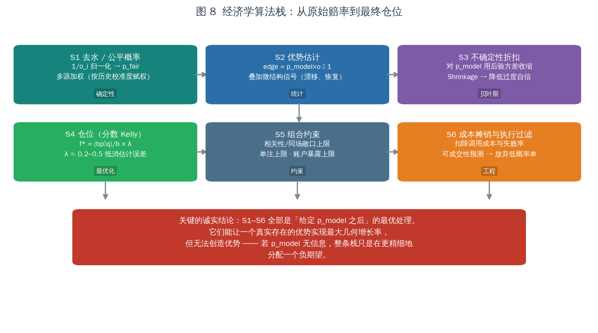
| 阶段 | 方法 | 类型 | 关键点 |
|---|---|---|---|
| S1 去水 / 公平概率 | Proportional / Additive / Power / Odds-ratio / Shin | 确定性 | 庄家加价非比例式（favourite-longshot bias），需分段或模型化（§8.1） |
| S2 优势估计 | edge = p·o − 1，叠加微结构信号 | 统计 | 优势估计的方差比点估计更重要 |
| S3 不确定性收缩 | 后验收缩 p̂ = w·p_hat + (1−w)·p_prior | 贝叶斯 | 抵消过度自信；防止负期望被放大（§8.4） |
| S4 仓位（分数·多元 Kelly） | f* = Σ⁻¹μ × λ，λ ≈ 0.2–0.5 | 最优化 | 必须显式建模跨注协方差（§8.5） |
| S5 组合约束 | 同场/相关性敞口上限、单注上限、账户暴露上限 | 约束 | 滚球注单在时间上强相关（同场多市场是同一风险因子） |
| S6 成本摊销与执行过滤 | 扣除调用成本与失败率；预测成交概率，放弃低概率单 | 工程 | 成交概率预测是最易被忽略、又最影响实际收益的模块 |
7.1 必须承认的上限
S1–S6 全部是「给定
p_model之后」的最优处理。 它们能让一个真实存在的优势实现最大几何增长率，但无法创造优势。 若p_model不含信息，整条栈只是在更精细地分配一个负期望。
8. 经济学算法支撑：公式体系与数值对比
本节为 S1–S6 提供完整的公式支撑与数值验证，并给出可落地的开源实现（§12）。
8.1 去水（margin removal）：方法选择能决定策略的符号
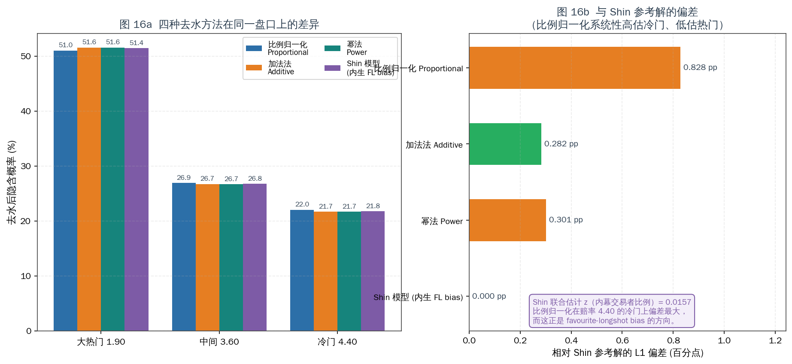
设赔率 o_i，原始隐含概率 q_i = 1/o_i，booksum B = Σq_i，水钱 m = B − 1。
四种主要方法：
| 方法 | 形式 | 特性 |
|---|---|---|
| 比例归一化 Proportional | p_i = q_i / B | 对所有结果等比例抽税；不处理 FL bias |
| 加法法 Additive | p_i = q_i − m/n | 等概率点抽税；可能产生负概率 |
| 幂法 Power | 解 Σ q_i^k = 1，p_i = q_i^k | 单一指数；把更多概率推向热门 |
| Shin 模型 | 见下 | 内生处理 favourite-longshot bias |
Shin (1992, 1993) 模型：假设存在比例为 z 的内幕交易者，庄家据此定价：
z 由约束 Σp_i = 1 数值求解。
数值对比（盘口 1.90 / 3.60 / 4.40，booksum = 1.0314）：
| 方法 | p(1.90) | p(3.60) | p(4.40) | 相对 Shin 的 L1 偏差 |
|---|---|---|---|---|
| 比例归一化 | 51.0% | 26.9% | 22.0% | 0.828 pp |
| 加法法 | 51.6% | 26.7% | 21.7% | 0.282 pp |
| 幂法 | 51.6% | 26.7% | 21.7% | 0.301 pp |
| Shin（参考） | 51.4% | 26.8% | 21.8% | 0.000 pp |
Shin 联合估计得 z = 0.0157（内幕交易者比例约 1.57%）。
这是本节最重要的结论：
- 比例归一化在冷门（4.40）上系统性高估（22.0% vs 21.8%），这正是 favourite-longshot bias 的方向 —— 即"比例法会让你在冷门上错误地看到优势"。
- 方法间 L1 偏差达 0.83 pp。当可寻优势只有 1–2% 时，去水方法的选择本身就足以翻转
edge的符号。- 工程结论：必须用多方法交叉，并对分段（热门/中间/冷门）分别校准，不能用单一比例法。
参考实现：
mberk/shin（Python）、Rimplied包（内置shin、power、or等方法及shin_method算法选择）。
8.2 隐含概率、优势与打平条件
打平条件（对单注）：
需要的相对精度优势恰为水钱 m。 当 m = 11.4%，你需要相对优于庄家模型 11.4%（§9.2 给出逐档数值）。
8.3 期望值与有效期望（含执行过滤）
名义期望：
有效期望（引入成交概率与执行成本）：
其中 s 为单注规模。由于 §5.3 的机制：
即：优势越大越易被拒单，注额越大越易被降限额。 这个负偏导是本案最核心的经济学障碍 —— 它意味着你无法通过提高模型质量来线性提升有效期望。
8.4 贝叶斯收缩：参数不确定性下必须缩小下注
Kelly 的最优性证明假设 p 已知且准确。当 p 存在估计误差时，全 Kelly 被系统性高估。
收缩估计（以 Beta-二项为例，n 为样本量，k 为强度）：
Kelly 的收缩形式（Baker & McHale, 2013）：
工程含义：k 就是"你对模型有多不确定"的直接表达。k → 0 退化为无收缩（激进）；k 增大则仓位自动保守。
学术界（Optimal Betting Under Parameter Uncertainty: Improving the Kelly Criterion）明确指出：用样本估计替代总体参数会损害样本外表现，应在参数不确定时收缩注额。这正是 §7 中 S3 阶段的理论依据。
8.5 多元 Kelly：相关性是必须显式建模的一等项
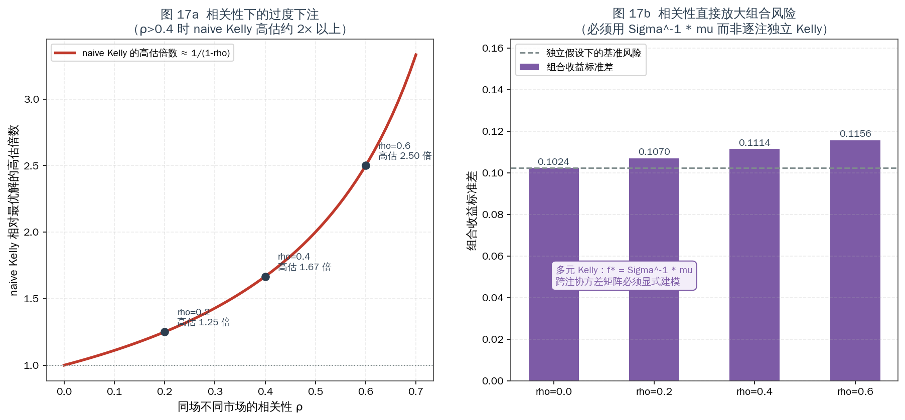
单注 Kelly：
多元 Kelly（同时下注 N 注）：
其中 Σ 为各注收益的协方差矩阵，μ 为超额收益向量。在多元正态近似下这是闭式解。
naive 逐注独立的系统性高估：
| 相关性 ρ | naive Kelly 高估倍数 |
|---|---|
| 0.2 | 1.25× |
| 0.4 | 1.67× |
| 0.6 | 2.50× |
组合收益方差的解析形式（两注情形）：
数值（示例盘口，ρ 从 0 递增）：组合标准差由 0.1024 → 0.1156，即相关性单独贡献了约 13% 的风险增幅。
为什么在同场场景下 ρ 会很高：同一场比赛的 1X2 与大小球共享同一批球员状态、天气、裁判倾向、比赛节奏等风险因子。忽略它，等于把同一笔风险重复计算为多笔独立机会。
参考实现：neeljshah/kellycorr（相关性感知的分数 Kelly 多腿定仓）；学术脉络为 Insley, Mok & Swartz (2004) 将 Kelly 扩展到同时下注场景，以及 Efficient Multivariate Kelly Optimization（指出 naive 联合枚举需 O(2^N)，需专门算法）。
8.6 几何增长率与破产概率
最大化对象是长期几何增长率，而非单期期望：
注意：g 是凹函数，且在 f 超过最优点后下降。这就是为什么"优势越大下注越多"是错的 —— 超过 f* 后，期望增长率为负，即使每注的 EV 为正。
破产概率下界（连续近似）：
工程含义：结合 §8.3 的 q_fill 负偏导与 §5.3 的降限额机制，实际执行中 f 会被对手方非自愿地推高（注额上限迫使你无法分数化），从而抬高破产概率。
8.7 成本摊销与盈亏平衡注数
盈亏平衡的真实条件（含 q_fill）：
即每被拒一单，就需要额外多下若干单来覆盖固定成本的正反馈。
8.8 评估指标（L6 校准闭环）
| 指标 | 公式 | 用途 | ||
|---|---|---|---|---|
| Brier 分数 | BS = (1/N)Σ(p_i − y_i)² | 概率预测的总体校准质量 | ||
| ECE 期望校准误差 | `ECE = Σ_b (n_b/N)·\ | acc_b − conf_b\ | ` | 分箱校准偏差，检测系统性过度自信 |
| CLV 收盘线价值 | CLV = o_bet / o_close − 1 | 衡量注单质量的核心指标，也是庄家风控的触发信号 | ||
| 对数增长率 | g = (1/T)Σ log(W_t/W_{t-1}) | 与 Kelly 目标一致的绩效度量 | ||
| 最大回撤 | max(W_peak − W_t)/W_peak | 结合破产概率评估生存能力 |
CLV 的双重角色：它既是你判断自己是否真有优势的指标，也是庄家判断你是否优势玩家的指标（§5.3）。同一个数字，同时是你成功的证明和你被封的原因。
9. 经济学分析（一）：水钱与所需精度优势
9.1 水钱：报价里的税
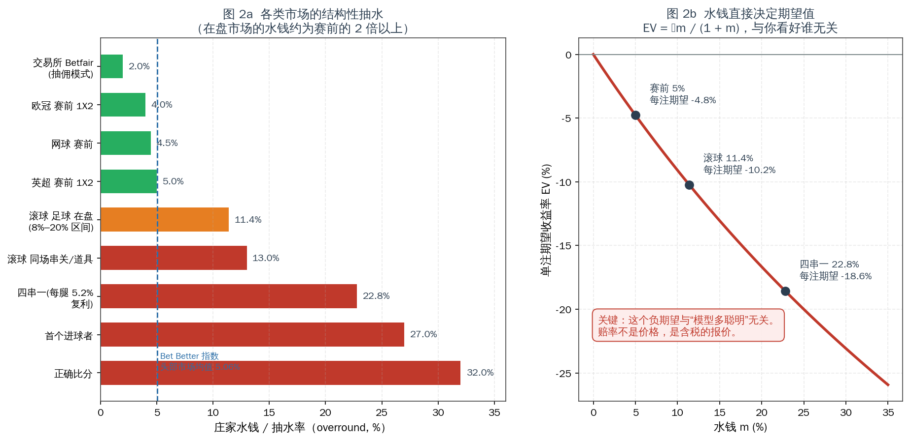
| 市场 | 典型水钱 | 单注 EV |
|---|---|---|
| 交易所（撮合模式，抽佣） | ~2.0% | −1.96% |
| 欧冠 / 网球 赛前 | 3–4.5% | −4.31%（按 4.5%） |
| 英超 赛前 1X2 | 4–6% | −4.76% |
| 滚球足球在盘（均值） | 11.4% | −10.23% |
| 滚球 同场串关/道具 | ~13% | −11.50% |
| 四串一（5.2%/腿 复利） | ~22.8% | −18.57% |
| 首个进球者 | 20–35% | −21.26% |
| 正确比分 | 25–45% | −24.24% |
关键观察：本构想的目标市场（滚球在盘）恰好是水钱最贵的市场。行业统计（12,000 注 / 6 家主流博彩 / 12 个月）给出赛果市场 6.8% vs 在盘市场 11.4%；Bet Better Margin Index（68 家、每日更新）给出头部市场均值 5.06%。
结构性推论：在盘市场的高水钱不是效率损失，而是产品定价 —— 庄家为"即时性 + 高频 + 低延迟"收取的溢价。 再叠加 §4.2 的发现：低层级赛事的覆盖率低、流动性差，水钱更高 —— 你的"100–200 场"覆盖面越大，平均水钱越贵。
9.2 打平所需的精度优势
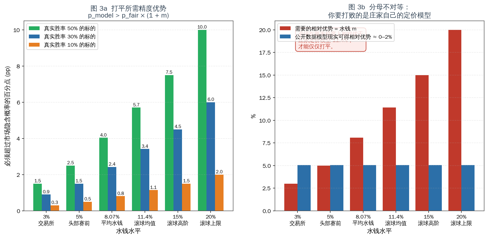
| 水钱档位 | p=50% 标的需超出 | p=30% 标的需超出 | p=10% 标的需超出 |
|---|---|---|---|
| 3%（交易所） | 1.5 pp | 0.9 pp | 0.3 pp |
| 5%（赛前头部） | 2.5 pp | 1.5 pp | 0.5 pp |
| 8.07%（平均） | 4.0 pp | 2.4 pp | 0.8 pp |
| 11.4%（滚球均值） | 5.7 pp | 3.4 pp | 1.1 pp |
| 15%（滚球高阶） | 7.5 pp | 4.5 pp | 1.5 pp |
| 20%（滚球上限） | 10.0 pp | 6.0 pp | 2.0 pp |
分母不对等问题：你需要打败的是庄家自己的定价模型（夏普市场共识 + 全市场资金流 + 自有风控因子），因此你的优势是相对的。
| 证据 | 结论 |
|---|---|
开源项目 CODESIGURD/value-bet-model | 5 轮模型迭代 / 4 种特征增强 / 10 联赛 25 赛季样本外 → 从未达到盈利阈值（AUC 0.535–0.560），作者公开确认为零结果 |
| 行业共识（OddsShopper 等） | "模型本身不能击败体育投注；优势存在于价格而非选择" |
| 学术（Whelan） | 水钱与实际损失率的关系需按赔率区间分段修正（FL bias） |
关键不对称：
- 在水平上竞争（预测比赛结果）→ 面对已被定价的公开信息，优势 ≈ 0；
- 在时间结构上竞争（微结构信号）→ 唯一有价值的方向，但收益受 §5.3 成交裁定封顶。
10. 经济学分析（二）：成本结构与摊销
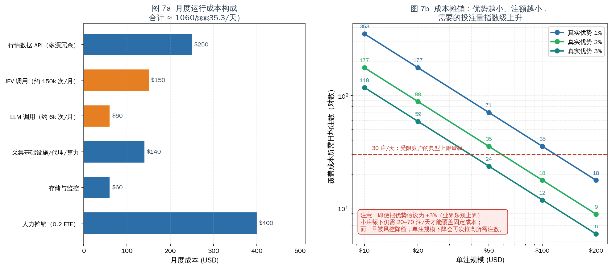
10.1 月度成本构成
| 项目 | 月成本 (USD) | 说明 |
|---|---|---|
| 行情数据 API（多源冗余 + 参考线） | 250 | §3.4 冗余必需 |
| JEV 调用（约 150k 次/月） | 150 | 高频路径 B |
| LLM 调用（约 6k 次/月） | 60 | 低频路径 C |
| 采集基础设施 / 代理 / 算力 | 140 | §4.4 的多路径要求下偏低估 |
| 存储与监控（含 57k 记录/天） | 60 | 时序库 + 告警 |
| 人力摊销（0.2 FTE） | 400 | §3.3 的协议漂移下偏低估 |
| 合计 | $1,060 | $35.3/天 |
两项修正说明（重要）：
- §4.4 要求 4–5 条并行采集路径 → 采集基础设施成本应显著高于 $140/月。
- §3.3 证明协议漂移是常态 → 人力不是"0.2 FTE 的维护"，而是"季度级重做逆向"的持续投入。
保守修正：若按 0.5 FTE 并叠加多路径基础设施，月度成本应上修至 1,700–2,000** 区间。§11 的蒙特卡洛使用 35.3/天 是乐观口径**；成本翻倍会使情形 D 的盈利概率进一步下降。
10.2 摊销：覆盖成本所需的投注量
| 单注规模 | 优势 +1% | +2% | +3% |
|---|---|---|---|
| $10 | 353 注 | 176 注 | 118 注 |
| $20 | 176 注 | 88 注 | 59 注 |
| $50 | 71 注 | 35 注 | 24 注 |
| $100 | 35 注 | 18 注 | 12 注 |
| $200 | 18 注 | 9 注 | 6 注 |
读法：
- 单注 $10 + 1% 优势 → 需要 353 注/天，这个量级在任何平台上都会立即触发风控。
- 单注 $100 + 2% 优势 → 需要 18 注/天，是唯一在数量上似乎可行的组合。
- 但一旦被降限额（§5.3），单注规模下降会再次推高所需注数 —— 结合 §8.7 的
q_fill负偏导，形成正反馈式的死亡螺旋。
结构性矛盾：可行的投注量需要较大单注规模，而较大单注规模更快触发限额；被限额后又需要更多注数覆盖固定成本。
11. 量化压力测试
11.1 参数
| 参数 | 取值 |
|---|---|
| 初始银行 | $10,000 |
| 下注频率 | 5 注/天 |
| 单注比例 | 银行 2%（flat，保守） |
| 结算赔率 | 1.95 |
| 模拟时长 | 90 天 |
| 路径数 | 20,000 |
| 日运行成本（情形 D） | $35.3（乐观口径，见 §10.1） |
| 平台跑路/拒付概率（情形 C） | 25%，发生时损失 70% 本金 |
胜率由 EV 反推：q = (1 + EV) / 1.95
11.2 结果
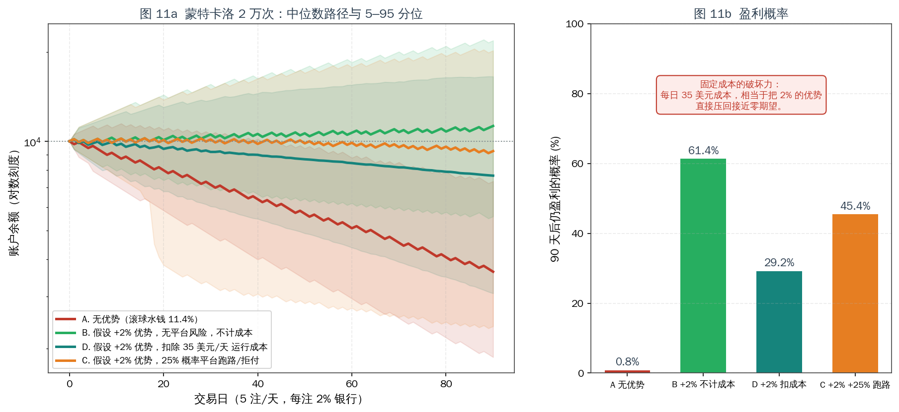
| 情形 | 90 日余额中位数 | 5 分位 | 95 分位 | 盈利概率 |
|---|---|---|---|---|
| A · 无优势（滚球水钱 11.4%） | $3,631 | $1,870 | $7,329 | 0.8% |
| B · +2% 优势，无平台风险，不计成本 | $11,259 | $5,577 | $21,858 | 61.4% |
| D · +2% 优势，扣除 $35/天 成本 | $7,655 | $3,069 | $16,527 | 45.4% |
| C · +2% 优势，25% 概率跑路/拒付 | $9,263 | $2,377 | $20,217 | 29.2% |
四条关键读法：
- 情形 A 是默认结局：无优势时 99.2% 路径亏损，且亏损是对数坐标下的近似直线 —— 稳定的指数衰减。
- 情形 B 是乐观上界：即使假设 +2% 优势真实存在且不计成本，也只有 61.4% 路径盈利。2% 优势相对于 2% 下注比例与赔率波动，信噪比低，90 天样本量不足以稳定实现期望 → 回测盈利与实盘盈利之间存在巨大方差鸿沟。
- 情形 D 揭示成本的破坏力：每日 $35.3 固定成本把盈利概率从 61.4% 拉到 45.4%（−16 pp）。而 §10.1 指出该成本是乐观口径。
- 情形 C 是叠加后的现实：平台风险把 61.4% 压到 29.2%。D 与 C 会同时生效。
11.3 敏感性说明
关于 25%：本参数只用于说明量级，可在 scripts/make_figures.py 的 fig11_montecarlo() 中改为 5%、50% 重跑，结论方向不变。
更贴近现实的建模是把它视为与盈利水平正相关的累积过程 —— 因为触发限额与拒付的因素是注单质量（CLV），而非账户余额。你的成功本身就是风险的触发条件。 因此固定概率模型实际上是乐观简化。
11.4 微结构信号能改变结论吗？
| 场景 | 需要的相对优势 | 现实评估 |
|---|---|---|
| 在盘 11.4% 水钱下打平 | 11.4% | 极不可能（公开数据 0–2%） |
| 扣成本后净收益 +2% | ~13% | 更不可能 |
| 交易所 3% 水钱场景下净收益 +2% | ~5% | 仍远超公开数据可得水平 |
结论：微结构信号在理论上是正确的竞争维度，但要把打平所需的 11.4% 大部分由它提供，没有公开证据支持。工程上应把它当作边际改善（提高
q_fill、降低无效调用、改善 S6 执行过滤），而非优势来源。
12. 开源项目技术支撑
本节列出可核验的开源实现，作为前述技术判断的支撑或证否依据。
12.1 采集层（支撑 §3）
| 项目 | 技术要点 | 对本方案的支撑 / 证否 |
|---|---|---|
BreathPulley/stake-scraper | 直接 POST /_api/graphql 复用站点内部端点；无浏览器、无 Selenium、无验证码；无需 token 可读公开盘口与注单流，有 token 可读账户/注单；给出 Cloudflare 应对要点（同查询 <1 req/s、Session keep-alive、随机 UA、x-language 头、重场景用轮换代理 + FlareSolverr） | ✅ 正面支撑路径 B：证明"逆向 GraphQL、免浏览器"在真实平台上可行 |
erdieee/allusion | Playwright；配置驱动选择体育/国家/联赛；内置套利检测；README 警告多页并发的 CPU 开销 | ✅ 正面支撑路径 C；同时提示浏览器自动化的成本（CPU/并发上限） |
jordantete/OddsHarvester | Playwright；11 运动 / 100+ 联赛 / 数十种盘口；输出 JSON / CSV / S3；PyPI 发布 | ✅ 正面支撑路径 D 的覆盖规模 |
stonehedgelabs/snuper | 异步采集；DraftKings / BetMGM / Bovada / FanDuel；不可变快照（immutable snapshots） + 流式实时推送；可扩展存储接口 | ✅ 正面支撑架构：不可变快照是赔率微结构分析的正确数据模型 |
rafabelokurows/sports-odds | Betclic 平台；作者公开记录：对方变更 API + CloudFront 新增校验 → 采集失效，并专门新建探索脚本应对 | ❌ 关键证否：协议漂移是常态，采集层存在必然的半衰期（§3.3） |
smartworkersai/KOS | 明确"剥离脆弱的浏览器自动化，转向 API 驱动的信号引擎"；多租户状态机；套利/匹配下注 | ✅ 印证工程方向：去浏览器化、API 优先 |
odds-api/odds-api、cengizmandros/odds-arb-scanner | OpenAPI 规范；套利与 +EV 扫描；以 Pinnacle 作为"真实概率"锚点与其他书商比价 | ✅ 支撑 §3.5 的参考线用法（商业 API 的合理定位） |
12.2 建模与算法层（支撑 §7、§8）
| 项目 | 技术要点 | 对本方案的支撑 / 证否 |
|---|---|---|
martineastwood/penaltyblog | Cython 加速；Poisson / Bivariate Poisson / Dixon-Coles 等；FootballProbabilityGrid 封装完整比分概率网格，可向量化导出各盘口；含 scraper、回测、球队评分（Elo / Pi-rating）、Ranked Probability Score | ✅ 正面支撑 L2/L4：比分建模与盘口概率推导有成熟、高性能实现 |
mberk/shin | Shin 方法的 Python 实现；README 指出其概率精度优于"逆赔率除以 booksum"的标准做法 | ✅ 正面支撑 §8.1 去水 |
neeljshah/kellycorr | 相关性感知的分数 Kelly：全协方差矩阵定仓，面向多腿与串关 | ✅ 正面支撑 §8.5：印证"naive Kelly 在 ρ>0.4 时高估约 2 倍以上" |
R implied 包 | 内置 shin / power / or / additive 等方法；Shin 提供 z 的内幕交易者比例估计与多种求解算法（shin_method） | ✅ 正面支撑 §8.1：多方法交叉是标准实践 |
CODESIGURD/value-bet-model | 5 轮模型迭代 / 4 种特征增强 / 10 联赛 25 赛季样本外；结论：庄家收盘线在公开数据下无法被击败（AUC 0.535–0.560，从未达盈利阈值）；作者完整公开"从假阳性到确认零结果"的过程 | ❌ 关键证否：直接否证"提高模型复杂度可获得 >11.4% 相对优势" |
12.3 数据/API 基础设施（支撑 §3.5、§4.1）
| 项目 | 能力 | 定位 |
|---|---|---|
| The Odds API | 50+ 书商 / 26 运动；在盘间隔 40s | 证否"API 可做跳动检测"（§3.5） |
odds-api.io | 12,000+ 联赛 / 265+ 书商 / 34 运动 | 证明覆盖规模可达（§4.1） |
rapidoddsapi | 100+ 书商，REST + WebSocket，含 live scores 与球员数据 | 覆盖与推送能力参考 |
| Pinnacle API（官方文档） | REST，含 bet placement；2025-07-23 起对公众关闭 | 说明"庄家侧 API"的可得性在收缩 |
| Betfair Exchange API（官方文档） | Betting / Accounts / Streaming API；placeOrders 原子操作；需 App Key + 证书 | 唯一公开可编程下注通道，撮合定价 |
sportsdataverse/oddsapiR | R 包，封装 The Odds API；自动配额跟踪 | 生态完整性参考 |
12.4 开源生态的整体判断
从上述仓库可以得出三条技术层已经确定的结论：
| 结论 | 支撑仓库 | 含义 |
|---|---|---|
| ① 采集中间层技术可行（逆向 GraphQL / 浏览器自动化 / 异步快照） | stake-scraper、allusion、OddsHarvester、snuper | L1 可以做出来，且已有多种成熟范式 |
| ② 但采集层存在必然的协议半衰期 | sports-odds（失效记录）、KOS（架构迁移） | L1 的运维成本是持续性的，不是一次性的 |
| ③ 建模与算法层有完整开源实现 | penaltyblog、mberk/shin、kellycorr、implied | L2/L4 不需要从零造轮子 |
| ④ 但"公开数据可获 >11.4% 相对优势"被实证否证 | CODESIGURD/value-bet-model | L3/L4 再完美，也无法改变 p_model 无信息这一事实 |
技术层的最终判断： 本方案不缺实现（①③ 已证明），缺的是优势来源（④ 已否证）。 唯一的希望是 §5.1 的微结构信号 —— 而它的收益被 §5.3 的成交裁定封顶，且没有公开证据支持它能提供 11.4% 量级的相对优势。
13. 可行性评分与结论
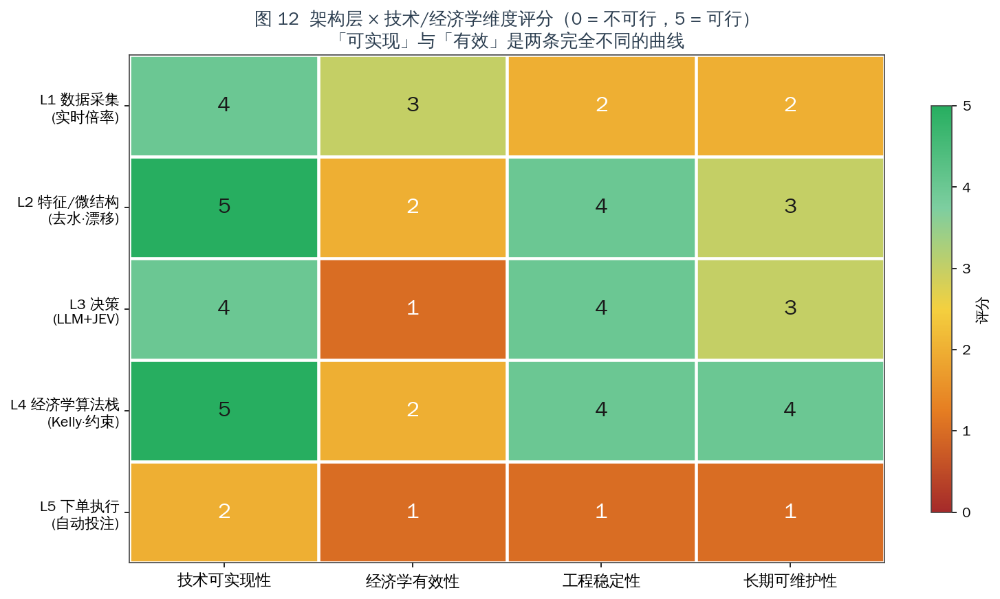
| 架构层 | 技术可实现性 | 经济学有效性 | 工程稳定性 | 长期可维护性 |
|---|---|---|---|---|
| L1 数据采集（实时倍率） | 4 | 3 | 2 | 2 |
| L2 特征/微结构（去水·漂移） | 5 | 2 | 4 | 3 |
| L3 决策（LLM+JEV） | 4 | 1 | 4 | 3 |
| L4 经济学算法栈 | 5 | 2 | 4 | 4 |
| L5 下单执行（自动投注） | 2 | 1 | 1 | 1 |
评分口径：0 = 不可行 / 5 = 完全可行。作者基于本报告证据的主观评分，可通过
data/feasibility_scores.csv复核调整。
读图要点：
- 「可实现」与「有效」是两条完全不同的曲线。 L1/L2/L4 技术分都很高，但经济学有效性只有 2–3 分。
- L1 的稳定性与可维护性只有 2 分 —— 这是 §3.3 协议漂移与 §4.4 多路径要求的直接结果。技术上能做 ≠ 能长期稳定地做。
- L3 的分裂最明显：技术 4 分 / 经济学 1 分。混合决策架构的工程答案是对的，但不改变期望值的符号。
- L5 全面低分：技术 2（无 API、状态机脆弱）、稳定性 1、可维护性 1。这是单点否决项 —— 不是因为它难写，而是因为它由对手方裁定。
13.1 结论
| 问题 | 回答 |
|---|---|
| Q1 能不能实现？ | 技术上可以，分层差异巨大。 采集层（逆向 GraphQL / 浏览器自动化）已被多个开源项目验证；建模与算法层有成熟实现。但 L1 存在必然的协议半衰期与长尾覆盖的物理上限，L5 存在结构性的不可控。 |
| Q2 经济学上是否正期望？ | 否。 在盘水钱均值 11.4% → EV = −10.23%；打平需相对优于庄家定价模型 11.4%，公开数据可得优势 0–2%。去水方法选择（§8.1）与相关性建模（§8.5）会进一步侵蚀本已微薄的空间。 |
| 架构设计正确吗？ | 分层设计正确，且能得到严格最优解。 LLM + JEV + 经济学算法的三路分流是本类问题的最优工程答案。但它优化的是一个负期望系统。 |
| 最有价值的部分？ | L4 经济学算法栈（可维护性 4 分）与 L2 特征/微结构（可实现性 5 分）。这两层的方法论（§8 全套公式）可完整迁移到其它正期望场景。 |
13.2 直接回答原构想
不可行 —— 但原因与多数直觉相反。
它不是"爬虫做不到"，也不是"模型不够强"。
技术侧（本次补充调研的四点结论）：
- 爬虫（逆向）可行且已被验证：
stake-scraper证明免浏览器直连 GraphQL；allusion/OddsHarvester证明浏览器自动化可覆盖 100+ 联赛。- 但覆盖 100–200 场的完整性目标无法在长尾上达成：低层级赛事占日历 94%，开盘覆盖率却跌到 25% —— 这是上游不开盘，不是采集能力问题。完整性要求强制多路径（4–5 条），推高运维成本。
- 协议漂移是常态：
sports-odds的 README 就是一份"对方改 API → 采集失效"的现场记录。L1 的可维护性只有 2 分。- 算法支撑是充足的：去水（Shin/Power/Additive）、收缩、分数·多元 Kelly、Brier/ECE/CLV 评估，全部有开源实现。
经济学侧：
- 定价：打平需 11.4% 相对优势，可得优势 0–2%（差一个数量级）。而去水方法的选择本身就能造成 0.83 pp 的偏差，足以翻转符号。
- 成交：5–20s 接受延迟 + 改价 + 拒单 + 基于 CLV 的降限额，使"捕捉调价瞬间"的收益在成交前不可实现 —— 且
q_fill对优势与注额都是负偏导。- 成本：$35.3/天（乐观口径），模型成本仅占 20%；扣除成本后盈利概率从 61.4% → 45.4%；叠加平台风险 → 29.2%；无优势时 0.8%。
13.3 可迁移的工程产出
| 产出 | 可迁移场景 |
|---|---|
| 多路径采集架构（长连 / 逆向 / 浏览器 / 聚合 / API 五路分工） | 任何需要对抗端点漂移的数据采集系统 |
不可变快照 + 时序事件模型（§12.1 snuper） | 任何需要还原"过程"而非"状态"的行情系统 |
| 三路分流决策架构（规则 / JEV / LLM） | 任何"高频结构化 + 低频非结构化"混合决策系统 |
| 延迟预算分解方法（§5.2） | 任何实时系统的关键路径分析 |
| 去水方法体系与交叉校准（§8.1） | 任何需要从含税报价还原真实概率的场景 |
| 经济学算法栈全套公式（§8.2–8.8） | 任何含不确定性优势估计的资源配置问题 |
| 校准评估闭环（Brier / ECE / CLV / 对数增长率 / 最大回撤） | 任何概率预测系统的质量度量 |
成本摊销与 q_fill 修正模型（§8.7） | 判断"固定成本能否被边际优势覆盖"的策略评估 |
| 协议漂移的成本建模（§3.3） | 任何依赖第三方私有接口的系统的人力预算 |
附录
附录 A：数据与图表索引
| 文件 | 内容 | 对应章节 |
|---|---|---|
images/fig1_platform_infra.png | 图 1 目标平台技术形态与接口面 | §3.1 |
images/fig2_margin_and_ev.png | 图 2 水钱与单注 EV | §9.1 |
images/fig3_required_edge.png | 图 3 所需概率精度优势 | §9.2 |
images/fig4_latency_budget.png | 图 4 延迟预算与关键路径 | §5.2 |
images/fig5_hybrid_architecture.png | 图 5 LLM+JEV 混合决策架构 | §2 |
images/fig6_routing_matrix.png | 图 6 决策路由矩阵 | §6.2 |
images/fig7_cost_breakeven.png | 图 7 成本结构与摊销 | §10 |
images/fig8_econ_algo_stack.png | 图 8 经济学算法栈 | §7 |
images/fig9_odds_tick_sequence.png | 图 9 赔率跳动时序 | §5.3 |
images/fig10_jev_position.png | 图 10 JEV 定位与延迟占比 | §6.4 |
images/fig11_montecarlo.png | 图 11 蒙特卡洛结果 | §11 |
images/fig12_feasibility_heatmap.png | 图 12 可行性评分 | §13 |
images/fig13_scraping_paths.png | 图 13 爬虫路径技术可行性矩阵 | §3.2 |
images/fig14_coverage_scale.png | 图 14 赛事规模与覆盖率分层 | §4.2–4.3 |
images/fig15_completeness.png | 图 15 完整性六维评估 | §4.4 |
images/fig16_devig_methods.png | 图 16 四种去水方法对比 | §8.1 |
images/fig17_correlated_kelly.png | 图 17 相关性下的过度下注 | §8.5 |
data/margin_ev.csv | 各市场水钱与 EV | §9.1 |
data/required_edge.csv | 打平所需精度优势 | §9.2 |
data/latency_budget.csv | 分阶段延迟预算 | §5.2 |
data/routing_matrix.csv | 决策路由矩阵 | §6.2 |
data/cost_breakeven.csv | 成本构成与摊销 | §10 |
data/montecarlo.csv | 蒙特卡洛结果 | §11 |
data/feasibility_scores.csv | 可行性评分矩阵 | §13 |
data/scraping_paths.csv | 爬虫路径评分 | §3.2 |
data/coverage_scale.csv | 赛事覆盖分层与采集量级 | §4 |
data/completeness.csv | 完整性六维评分 | §4.4 |
data/devig_methods.csv | 去水方法数值对比 | §8.1 |
data/correlated_kelly.csv | 相关性 Kelly 数值 | §8.5 |
复现：
python3 scripts/make_figures.py依赖：numpy、matplotlib（中文字体 WenQuanYi Zen Hei）。
附录 B：公式汇总
去水
优势与打平
期望值
收缩
Kelly
几何增长率与风险
成本摊销
评估指标
附录 C：主要信源
A 级（一手文档 / 开源可核验代码 / 机构研究）
采集与接口
BreathPulley/stake-scraper— GraphQL 直连实现、免浏览器、Cloudflare 应对要点erdieee/allusion— Playwright + 配置驱动 + 套利检测jordantete/OddsHarvester— Playwright，11 运动 / 100+ 联赛 / JSON·CSV·S3stonehedgelabs/snuper— 异步采集 + 不可变快照 + 流式推送rafabelokurows/sports-odds— Betclic API 变更致失效的现场记录（CloudFront 新校验）smartworkersai/KOS— 从浏览器自动化迁移到 API 驱动信号引擎odds-api/odds-api、cengizmandros/odds-arb-scanner— OpenAPI + 套利/E V 扫描 + Pinnacle 锚点- The Odds API 官方更新间隔文档 — 在盘 40s / 赛前 60s / 交易所 20s
- Pinnacle API 官方文档 — 2025-07-23 起对公众关闭
- Betfair Developer Program / Exchange API / Streaming API 文档 —
placeOrders原子操作、App Key + 证书 odds-api.io— 12,000+ 联赛 / 265+ 书商；rapidoddsapi— 100+ 书商 REST+WS- Infoblox Threat Intel — 该类品牌共用基础设施（域名池 + CNAME 流量分发）的 DNS 研究
- Simon Willison《Jev introduces a new shape of LLM — System One》；OpenRouter Jev 教程 — JEV 接口与定位
建模与算法
martineastwood/penaltyblog— Cython，Poisson / Bivariate Poisson / Dixon-Coles / FootballProbabilityGrid / 回测mberk/shin— Shin 方法 Python 实现neeljshah/kellycorr— 相关性感知的分数 Kelly- R
implied包 —shin/power/or/additive多方法与shin_method CODESIGURD/value-bet-model— 5 轮迭代 / 25 赛季样本外 / 确认公开数据无法击败收盘线
B 级（行业数据 / 学术）
- CIES Football Observatory — 330,748 场官方比赛（12 赛季）
- Bet Better Margin Index — 68 家博彩、头部市场均值 5.06%
- Bitok Arena Research — 12,000 注 / 6 家博彩 / 12 个月；赛果 6.8% vs 在盘 11.4%
- Shin (1992, 1993) — 内幕交易者模型与非比例定价；Karl Whelan《How Does Inside Information Affect Sports Betting Odds?》
- 《Betting market efficiency and prediction in binary choice models》(Annals of OR) — Shin 法与归一化法的实证比较
- 《Adjusting Bookmaker's Odds to Allow for Overround》— 各方法缺陷（加法法可产生负概率等）
- 《The Favourite-Longshot Bias, Bookmaker Margins and Insider Trading in a Variety of Betting Markets》— FL bias 与 Shin 模型核心预测的验证
- Walsh & Joshi, Optimal sports betting strategies in practice, arXiv:2107.08827
- Insley, Mok & Swartz (2004) — Kelly 扩展到同时下注；《Kelly fraction estimation for multiple correlated bets》(Chin)
- 《Optimal Betting Under Parameter Uncertainty: Improving the Kelly Criterion》— 参数不确定性下的收缩
- 《Efficient Multivariate Kelly Optimization Reveals Sigmoidal Scaling Laws》— naive 联合枚举
O(2^N)问题 - 《Generalized framework for applying the Kelly criterion to stock markets》, arXiv:1806.05293 —
f* = Σ⁻¹μ - Kelly (1956) / Thorp (2007) — Kelly 准则原始文献与实务应用
- OddsShopper / pinnapi 行业分析 — "优势存在于价格而非选择"
C 级（社区实测 / 项目 README 经验记录）
- 交易所足球在盘最短接受延迟约 5s（ArbUsers 讨论）；软庄普遍 7–20s
- William Hill 被指控根据注单对庄家好坏决定延迟接受（Sports Handle 报道）
- 某平台用户实测：活球期固定约 7s 延迟，停表期即时成交（Reddit r/sportsbetting）
- UKGC 数据（经 howprosbet 引述）— 超半数受限账户终身亏损，触发条件为注单质量而非盈亏
- Stake 条款与社区实测 — 自动化工具在条款层面受限
allusionREADME — 多页并发的 CPU 约束警告
附录 D：可修订性说明
- 市场数据具时效性：水钱、限额、延迟参数随竞争与监管环境变化。
data/*.csv与scripts/make_figures.py已开放，参数均以命名常量出现，可直接替换重跑。 - 评分为主观判断：
feasibility_scores.csv、scraping_paths.csv、completeness.csv中的评分为作者基于本文证据的评估，非测量值。 - 平台风险参数（25%）为量级示意，非估计值；敏感性方向见 §11.3。
- §4 的覆盖率分层为经验量级，用于说明"长尾覆盖率急剧下降"这一结构性结论，不应用于精确容量规划。CIES 样本（330,748 场/12 赛季）为可核验的公开统计，是所有推算的锚点。
- 成本模型为乐观口径：§10.1 已说明 §3.3 与 §4.4 会推高实际成本。
- 本报告不含合规评估，按研究范围界定，全部结论仅基于技术与经济学分析。
报告结束。